Data Visualisation Example Code
Data visualisation examples of common combinations of variable types. The data used in these visualisations is the GapMinder data on life expectancy per year per country, and Mother Jones data on US Mass Shootings 1982-2018
Go to version without code
Python Libraries and Config
%matplotlib inline
import numpy as np
import pandas as pd
import matplotlib.pyplot as plt
import seaborn as sns; sns.set()
sns.set(style="ticks", color_codes=True)
sns.set_context("notebook")
sns.set({ "figure.figsize": (12/1.5,8/1.5) })
sns.set_style("white", {'axes.edgecolor':'gray'})
One Numerical Variable
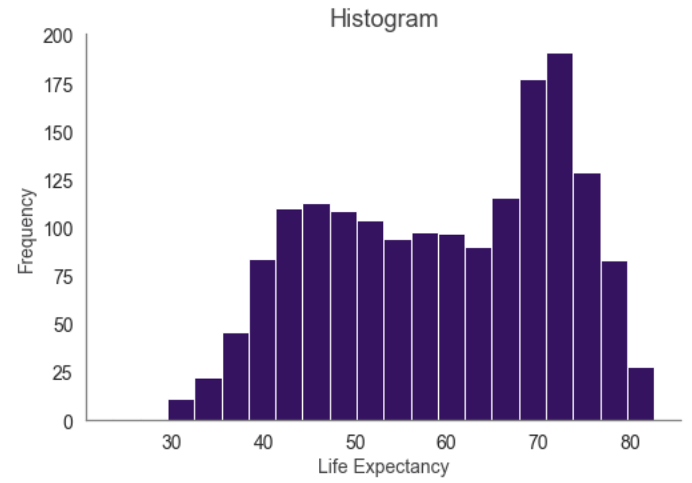
Python code:
df['lifeExp'].plot.hist(bins=20, color='#3A0B64');
plt.title('Histogram', fontsize=18, color='#3F3F41');
plt.ylabel('Frequency', fontsize=14, color='#3F3F41');
plt.xlabel('Life Expectancy', fontsize=14, color='#3F3F41');
plt.tick_params(labelsize=14, color='#3F3F41');
sns.despine();
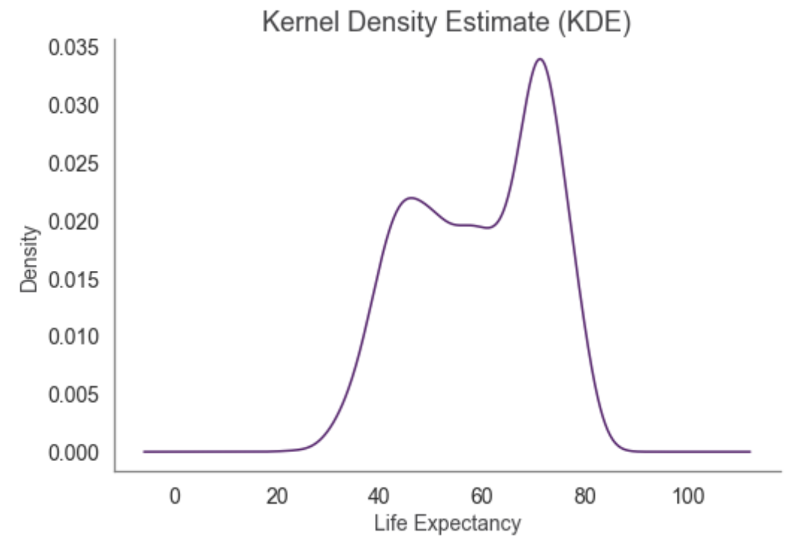
Python code:
df['lifeExp'].plot.kde(color='#58186C');
plt.title('Kernel Density Estimate (KDE)', fontsize=18, color='#3F3F41');
plt.ylabel('Density', fontsize=14, color='#3F3F41');
plt.xlabel('Life Expectancy', fontsize=14, color='#3F3F41');
plt.tick_params(labelsize=14, color='#3F3F41');
sns.despine();
Python code:
sns.distplot(df['lifeExp'], color='#77286A');
plt.title('Distribution Plot', fontsize=18, color='#3F3F41');
plt.ylabel('Density', fontsize=14, color='#3F3F41');
plt.xlabel('Life Expectancy', fontsize=14, color='#3F3F41');
plt.tick_params(labelsize=14, color='#3F3F41');
sns.despine();
Python code:
sns.boxplot(df['lifeExp'], color='#B0385E');
plt.title('Box Plot', fontsize=18, color='#3F3F41');
plt.xlabel('Life Expectancy', fontsize=14, color='#3F3F41');
plt.tick_params(labelsize=14, color='#3F3F41');
sns.despine(left=True);
Python code:
sns.violinplot(df['lifeExp'], color='#E46855');
plt.title('Violin Plot', fontsize=18, color='#3F3F41');
plt.xlabel('Life Expectancy', fontsize=14, color='#3F3F41');
plt.tick_params(labelsize=14, color='#3F3F41');
sns.despine(left=True);
Python code:
sns.stripplot(x='lifeExp', data=df, color='#E2AD51', alpha=0.6, jitter=True);
plt.title('Strip Plot', fontsize=18, color='#3F3F41');
plt.xlabel('Life Expectancy', fontsize=14, color='#3F3F41');
plt.tick_params(labelsize=14, color='#3F3F41');
sns.despine(left=True);
Python code:
cur_ax = sns.boxplot(x='lifeExp', data=df, color='#E8725F')
sns.stripplot(x='lifeExp', data=df, jitter=True, linewidth=0.5, ax=cur_ax, color='#FEDFA5');
plt.title('Box + Strip Plot', fontsize=18, color='#3F3F41');
plt.xlabel('Life Expectancy', fontsize=14, color='#3F3F41');
plt.tick_params(labelsize=14, color='#3F3F41');
sns.despine(left=True);
One Categorical Variable
Python code:
continent_le = pd.DataFrame(df['continent'].value_counts())
continent_le.reset_index(inplace=True)
continent_le.columns = ['Continent', 'Frequency']
continent_le
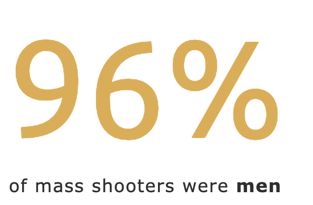
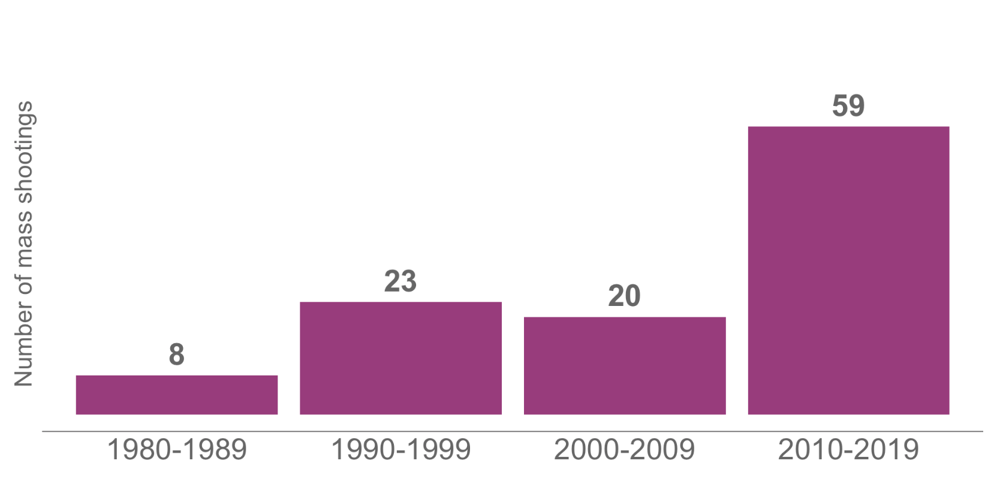
Python code:
# Prepare Data
dot_df = df.groupby('continent').size().reset_index(name='counts').sort_values('counts', ascending=False)
# Draw plot
fig, ax = plt.subplots(figsize=(16,8), dpi= 80)
ax.hlines(y=dot_df.continent, xmin=0, xmax=650, color='gray', alpha=0.7, linewidth=1, linestyles='dashdot')
ax.scatter(y=dot_df.continent, x=dot_df.counts, s=400, color='#58186C', alpha=0.7)
# Title, Label, Ticks and Ylim
plt.title('Dot Plot', fontsize=18, color='#3F3F41');
plt.xlabel('Frequency', fontsize=14, color='#3F3F41');
plt.tick_params(labelsize=14, color='#3F3F41');
sns.despine(left=True);
plt.show()
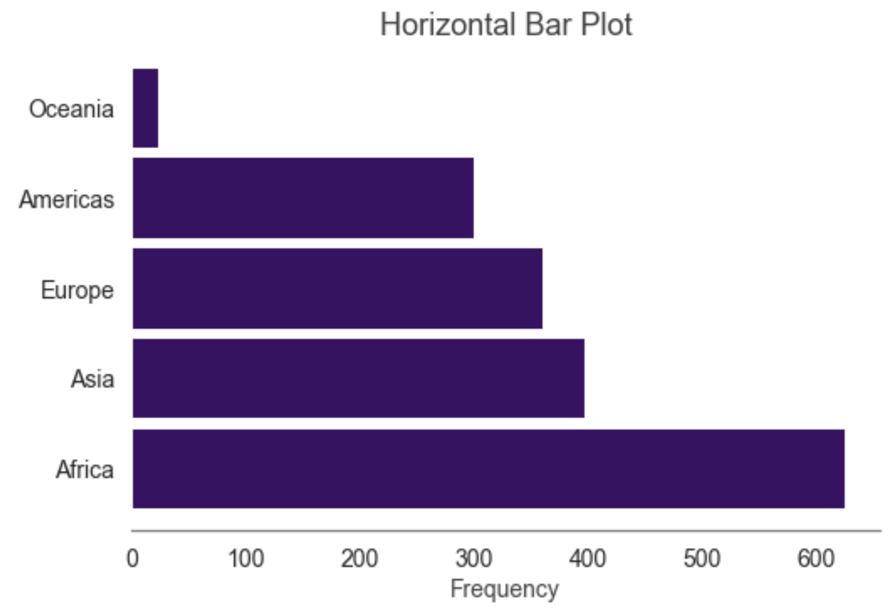
Python code:
continent_le.plot.barh(x='Continent', y='Frequency', color='#3A0B64', width=0.9);
plt.title('Horizontal Bar Plot', fontsize=18, color='#3F3F41');
plt.ylabel(None);
plt.xlabel('Frequency', fontsize=14, color='#3F3F41');
plt.tick_params(labelsize=14, color='#3F3F41');
plt.legend().set_visible(False);
sns.despine(left=True);
One Category and One Number
Python code:
cont_le_ft = pd.DataFrame(df.groupby(by=['continent'])['lifeExp'].median().round(2))
cont_le_ft.reset_index(inplace=True)
cont_le_ft.columns = ['Continent', 'Median_life_exp']
cont_le_ft
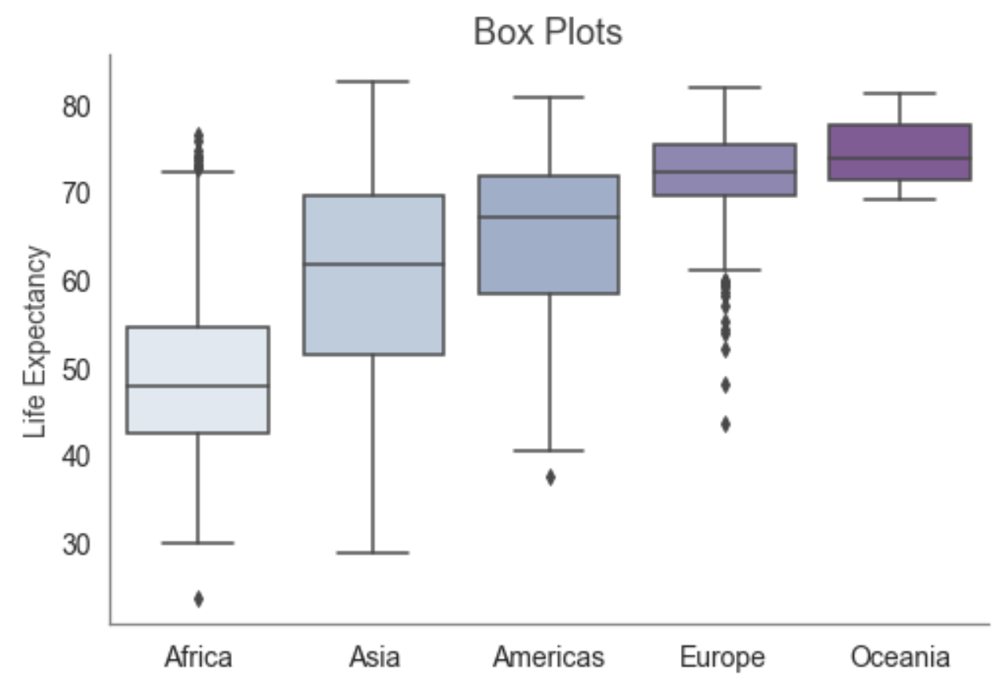
Python code:
with sns.color_palette("BuPu"):
sns.boxplot(x='continent', y='lifeExp', data=df , order=["Africa", "Asia", "Americas", "Europe", "Oceania"]);
plt.title('Box Plots', fontsize=18, color='#3F3F41');
plt.xlabel('Continent', fontsize=14, color='#3F3F41');
plt.ylabel('Life Expectancy', fontsize=14, color='#3F3F41');
plt.tick_params(labelsize=14, color='#3F3F41');
sns.despine();
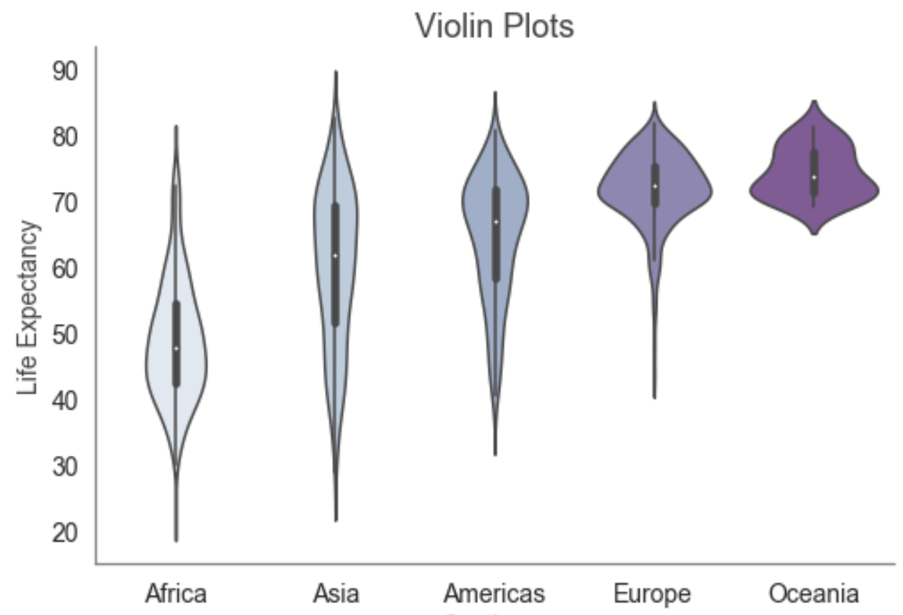
Python code:
with sns.color_palette("BuPu"):
sns.violinplot(x='continent', y='lifeExp', data=df, order=["Africa", "Asia", "Americas", "Europe", "Oceania"]);
plt.title('Violin Plots', fontsize=18, color='#3F3F41');
plt.xlabel('Continent', fontsize=14, color='#3F3F41');
plt.ylabel('Life Expectancy', fontsize=14, color='#3F3F41');
plt.tick_params(labelsize=14, color='#3F3F41');
sns.despine();
Python code:
with sns.color_palette("BuPu"):
sns.stripplot(x='continent', y='lifeExp', data=df, alpha=0.7,
order=["Africa", "Asia", "Americas", "Europe", "Oceania"],
jitter=True);
plt.title('Strip Plots', fontsize=18, color='#3F3F41');
plt.xlabel('Continent', fontsize=14, color='#3F3F41');
plt.ylabel('Life Expectancy', fontsize=14, color='#3F3F41');
plt.tick_params(labelsize=14, color='#3F3F41');
sns.despine();
Python code:
with sns.color_palette("BuPu"):
cur_ax = sns.boxplot(x='continent', y='lifeExp', data=df,
order=["Africa", "Asia", "Americas", "Europe", "Oceania"])
sns.stripplot(x='continent', y='lifeExp', data=df,
order=["Africa", "Asia", "Americas", "Europe", "Oceania"],
jitter=True, linewidth=0.5, color='#f5f5f5', ax=cur_ax);
plt.title('Box & Strip Plots', fontsize=18, color='#3F3F41');
plt.xlabel('Continent', fontsize=14, color='#3F3F41');
plt.ylabel('Life Expectancy', fontsize=14, color='#3F3F41');
plt.tick_params(labelsize=14, color='#3F3F41');
sns.despine();
Python code:
cont_le_ft = pd.DataFrame(df.groupby(by=['continent'])['lifeExp'].median().round(2))
cont_le_ft.reset_index(inplace=True)
cont_le_ft.columns = ['Continent', 'Median_life_exp']
cont_le_ft.sort_values('Median_life_exp', ascending=False)\
.plot.barh(x='Continent', y='Median_life_exp', color='#B0385E', width=0.9);
plt.title('Horizontal Bar Plot', fontsize=18, color='#3F3F41');
plt.xlabel('Median Life Expectancy', fontsize=14, color='#3F3F41');
plt.ylabel(None);
plt.legend().set_visible(False);
plt.tick_params(labelsize=14, color='#3F3F41');
sns.despine(left=True);
Python code:
cont_le_ft = cont_le_ft.sort_values('Median_life_exp', ascending=False)
fig, ax = plt.subplots(figsize=(16,8), dpi= 80)
ax.hlines(y=cont_le_ft.Continent, xmin=0, xmax=100, color='gray', alpha=0.8, linewidth=1, linestyles='dashdot')
ax.scatter(y=cont_le_ft.Continent, x=cont_le_ft.Median_life_exp, s=400, color='#E46855')
plt.title('Dot Plot', fontsize=18, color='#3F3F41');
plt.ylabel(None);
plt.xlabel('Median Life Expectancy', fontsize=14, color='#3F3F41');
plt.tick_params(labelsize=14, color='#3F3F41');
plt.xlim(45, 75);
sns.despine(left=True);
plt.show()
Two Numerical Variables
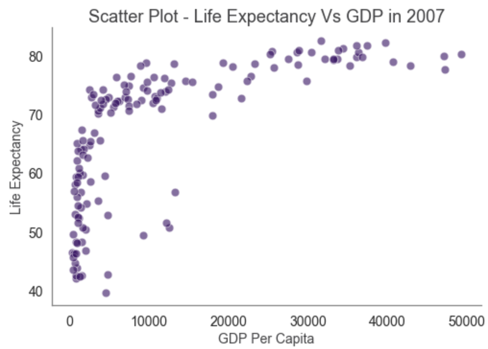
Python code:
df_2007 = df.loc[df['year']==2007]
sns.scatterplot(data=df_2007, x='gdpPercap', y='lifeExp', color='#3A0B64', alpha=0.6, s=75);
plt.title('Scatter Plot - Life Expectancy Vs GDP in 2007', fontsize=18, color='#3F3F41');
plt.xlabel('GDP Per Capita', fontsize=14, color='#3F3F41');
plt.ylabel('Life Expectancy', fontsize=14, color='#3F3F41');
plt.tick_params(labelsize=14, color='#3F3F41');
sns.despine();
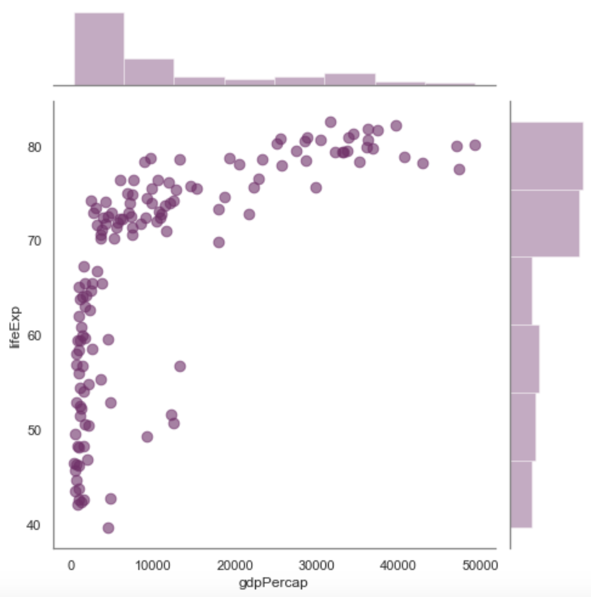
Python code:
sns.jointplot(data=df_2007, x='gdpPercap', y='lifeExp', height=7, color='#77286A', alpha=0.6, s=75);
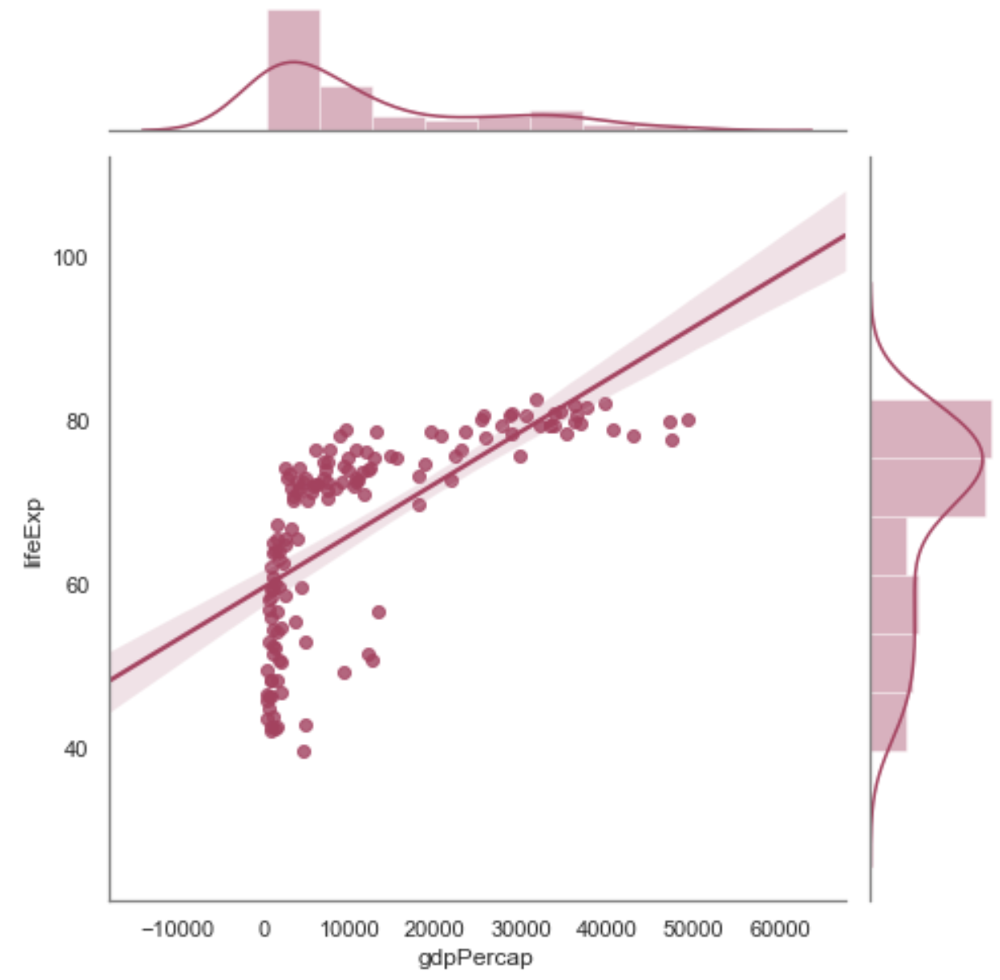
Python code:
sns.jointplot(data=df_2007, x='gdpPercap', y='lifeExp', color='#B0385E', height=7, kind="reg");
Python code:
sns.jointplot(data=df_2007, x='gdpPercap', y='lifeExp', color='#E46855', height=7, kind="hex");
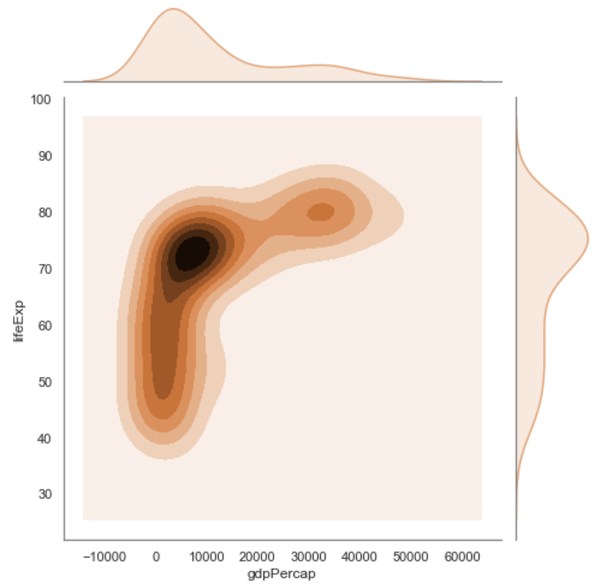
Python code:
sns.jointplot(data=df_2007, x='gdpPercap', y='lifeExp', color='#EBA575', height=7, kind="kde");
Two Categories and One Number
Python code:
import matplotlib.lines as mlines
# Function to draw line segments
def newline(p1, p2):
ax = plt.gca()
l = mlines.Line2D([p1[0],p2[0]], [p1[1],p2[1]], color='#c2c0c0', alpha=0.5, linestyle='--', linewidth=3, zorder=1)
ax.add_line(l)
return l
# Figure and Axes
fig, ax = plt.subplots(1,1,figsize=(16,8), dpi= 80)
# Points
ax.scatter(y=df_2yrs['continent'], x=df_2yrs['1952'], s=400, color='#E5825B', zorder=2)
ax.scatter(y=df_2yrs['continent'], x=df_2yrs['2007'], s=400, color='#B0385E', zorder=3)
ax.legend(['1952','2007'], loc='upper left', ncol=2, title='Legend')
# Line Segments
for i, p1, p2 in zip(df_2yrs['continent'], df_2yrs['1952'], df_2yrs['2007']):
newline([p1, i], [p2, i])
# Aesthetics
plt.title('Dumbell Chart', fontsize=18, color='#3F3F41');
plt.xlabel('Median Life Expectancy', fontsize=14, color='#3F3F41');
plt.ylabel(None);
plt.tick_params(labelsize=14, color='#3F3F41');
sns.despine(left=True);
plt.show()
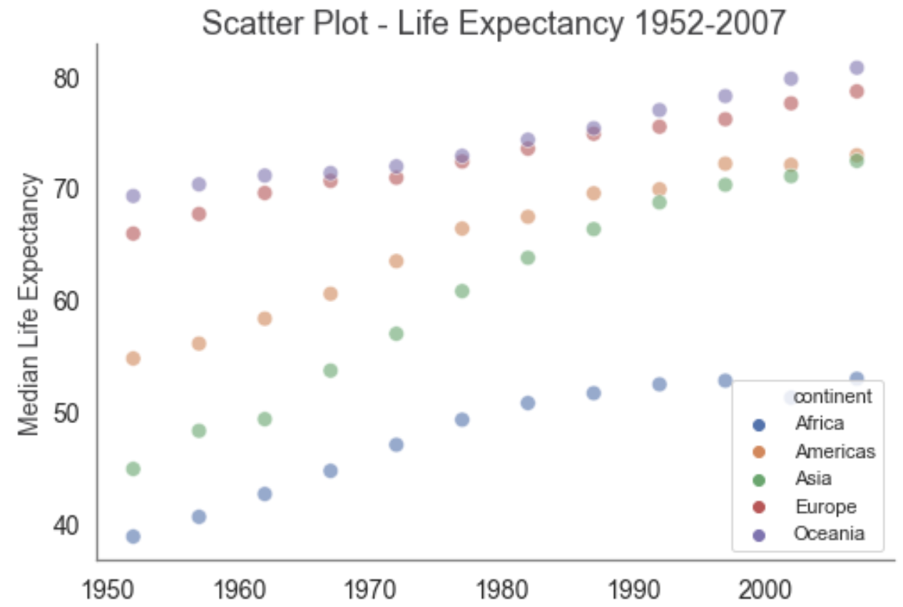
Python code:
sns.scatterplot(data=two_cats_ft, x='year', y='median_life_exp', hue='continent', alpha=0.6, s=75);
plt.title('Scatter Plot - Life Expectancy 1952-2007', fontsize=18, color='#3F3F41');
plt.xlabel('Year', fontsize=14, color='#3F3F41');
plt.ylabel('Median Life Expectancy', fontsize=14, color='#3F3F41');
plt.tick_params(labelsize=14, color='#3F3F41');
sns.despine()
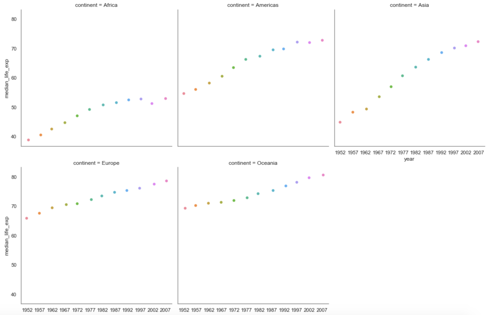
Python code:
sns.catplot(data=two_cats_ft, x='year', y='median_life_exp', col='continent', col_wrap=3, s=6);
Python code:
df_2yrs = df.loc[
(df['year']==1952) |
(df['year']==2007)
]
with sns.color_palette("BuPu"):
df_2yrs.groupby(by=['year', 'continent'])['lifeExp'].median().unstack().plot.bar();
plt.legend(title=None);
plt.title('Grouped Bar Plot', fontsize=18, color='#3F3F41');
plt.xlabel(None);
plt.ylabel('Life Expectancy', fontsize=14, color='#3F3F41');
plt.tick_params(labelsize=14, color='#3F3F41');
sns.despine();
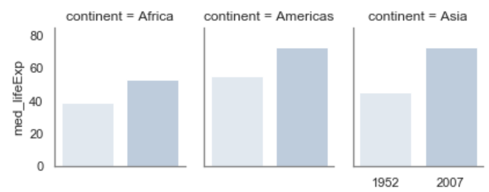
Python code:
df_2yrs_2 = df.loc[
(df['year']==1952) |
(df['year']==2007)
]
df_2yrs_2 = pd.DataFrame(df_2yrs_2.groupby(by=['year', 'continent'])['lifeExp'].median())
df_2yrs_2.reset_index(inplace=True)
df_2yrs_2.columns = ['year', 'continent', 'med_lifeExp']
with sns.color_palette("BuPu"):
sns.catplot(x="year", y="med_lifeExp", col="continent", col_wrap=3,
data=df_2yrs_2, kind="bar", height=2.5, aspect=.8);
Two Numbers and One Category
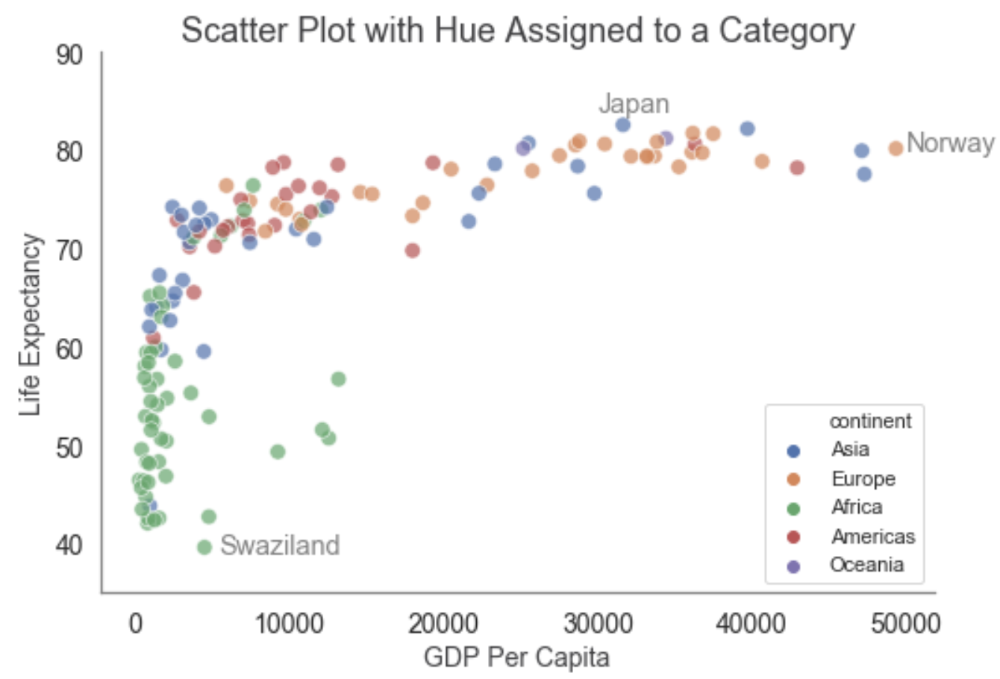
Python code:
df_2007_no_nulls = df.loc[
(df['year']==2007) &
(df['pop'].notnull()) &
(df['gdpPercap'].notnull()) &
(df['lifeExp'].notnull())
]
sns.scatterplot(data=df_2007_no_nulls, x='gdpPercap', y='lifeExp', hue='continent', s=75, alpha=0.7);
plt.legend(loc='lower right');
plt.ylim(35, 90);
plt.title('Scatter Plot with Hue Assigned to a Category', fontsize=18, color='#3F3F41');
plt.xlabel('GDP Per Capita', fontsize=14, color='#3F3F41');
plt.ylabel('Life Expectancy', fontsize=14, color='#3F3F41');
plt.tick_params(labelsize=14, color='#3F3F41');
plt.text(5500, 39, "Swaziland", horizontalalignment='left', size='large', color='gray')
plt.text(30000, 84, "Japan", horizontalalignment='left', size='large', color='gray')
plt.text(50000, 80, "Norway", horizontalalignment='left', size='large', color='gray')
sns.despine();
Python code:
sns.relplot(x="gdpPercap", y="lifeExp", col="continent", s=75, color='#E5825B', alpha=0.6,
data=df_2007_no_nulls, height=4, col_wrap=3);
Three Numerical Variables
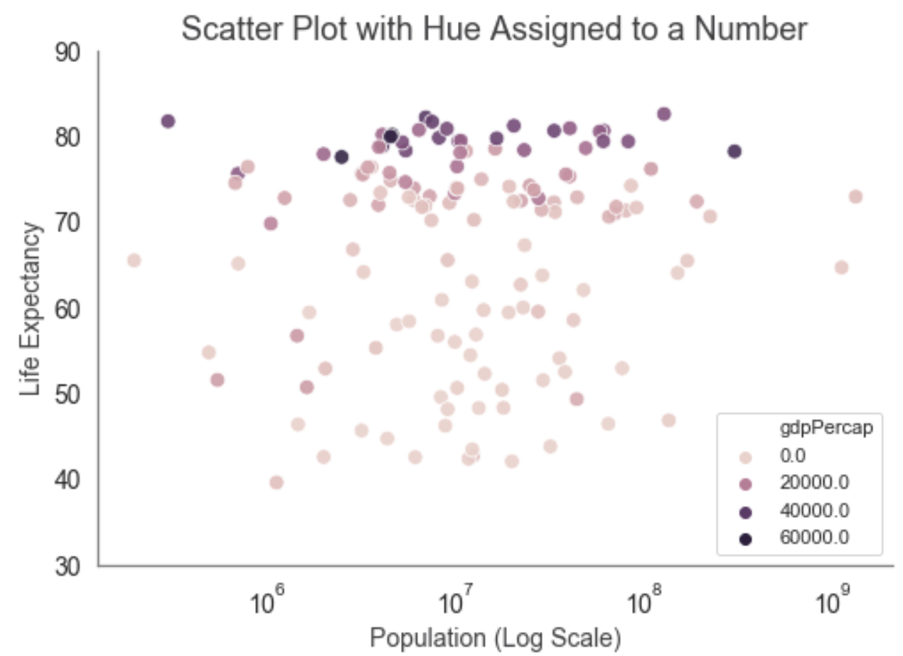
Python code:
three_num_vars = df_2007_no_nulls.loc[:, ['lifeExp', 'pop', 'gdpPercap']]
sns.scatterplot(data=three_num_vars, x='pop', y='lifeExp', hue='gdpPercap', s=75, alpha=0.9).set(xscale="log");
plt.legend(loc='lower right');
plt.ylim(30, 90);
plt.title('Scatter Plot with Hue Assigned to a Number', fontsize=18, color='#3F3F41');
plt.xlabel('Population (Log Scale)', fontsize=14, color='#3F3F41');
plt.ylabel('Life Expectancy', fontsize=14, color='#3F3F41');
plt.tick_params(labelsize=14, color='#3F3F41');
sns.despine();
Python code:
# Generate a mask for the upper triangle
mask = np.zeros_like(three_num_vars.corr(), dtype=np.bool)
mask[np.triu_indices_from(mask)] = True
# Set up the matplotlib figure
f, ax = plt.subplots(figsize=(16,8), dpi= 80)
# Draw the heatmap with the mask and correct aspect ratio
sns.heatmap(three_num_vars.corr(),
mask=mask,
cmap=sns.diverging_palette(220, 10, as_cmap=True),
annot=True,
annot_kws={"fontsize":14},
vmin=-1,
vmax=1,
center=0,
square=True,
linewidths=.5,
cbar_kws={"shrink": .5});
plt.title('Correlogram', fontsize=18, color='#3F3F41');
plt.tick_params(labelsize=14, color='#3F3F41');
sns.despine(left=False);
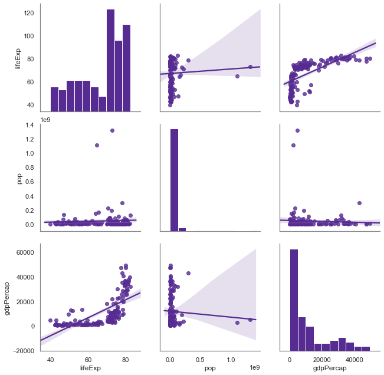
Python code:
with sns.color_palette("Purples_r"):
sns.pairplot(three_num_vars, height=3, kind="reg");